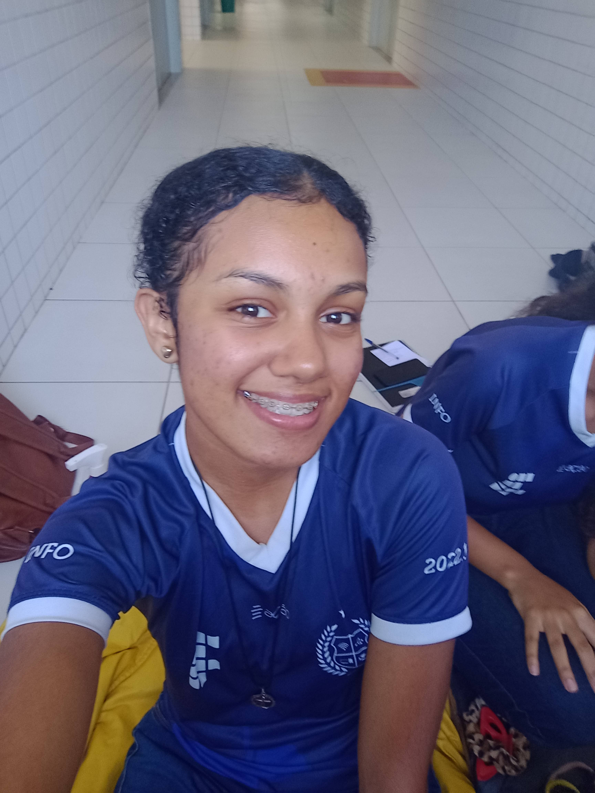

"Eu sou aquilo que Deus pensa de mim"
- Santa Teresinha do Menino Jesus
Vitória Beatriz Batista Brandão
Quem sou eu?
Brasileira, nasci e moro em Ceará-Mirim, cidade do estado do Rio Grande do Norte, localizada a 15km de distância da capital, Natal.
Gosto de ler, ver séries e de investigar o passado.
Apesar dos sonhos não terem limites, desejo o básico para uma vida digna e tranquila: passar na faculdade, trabalhar com o que desejo e viver bem com o que recebo, fazer memórias felizes com amigos e familiares e ter boas obras na vida do próximo.
Acredito que não é preciso muito para ser feliz. A felicidade está nos momentos mais triviais e comuns, como dizia Santa Teresinha do Menino Jesus: "Viver de amor é navegar sem cessar, semeando a paz, a alegria em todos os corações".
Curiosidades
Escrevi um livro chamado 'Histórias de uma garota', antologia com todas as minhas redações do 4º ano
Nasci no dia de São Miguel Arcanjo
Não levo muito jeito pra esportes, mas gosto de natação
Se eu tivesse nascido menino, meu nome seria Jackie Chan
Aprendi a andar de bicicleta tardiamente aos 13 anos
Ganhei uma medalha de ouro na Olímpiada Nacional de Ciências (ONC)
Escolaridade
Olhar para o passado deve ser apenas um meio de
entender mais claramente o que e quem eles são,
para que possam construir mais sabiamente o futuro.
- Paulo Freire
| Ano | Escola |
|---|---|
| Educação Infantil | CEI Monsenhor Rui Miranda |
| Fundamental I | Escola SEIS |
| Fundamental II | |
| Ensino Médio | IFRN/Campus Ceará-Mirim |
Situação Engraçada
Sou uma pessoa que já fez muitas ações engraçadas na vida, passando por algumas vergonhas no processo, mas sempre levando com bom humor. Existem duas situações que não super engraçadas, mas ainda lembradas pelas minhas primas, e as duas aconteceram no shopping.
Pessoas que foram ao shopping pela primeira vez quando já tinham um grau de entendimento sempre tem uma estória pra contar, e eu sou uma dessas pessoas.
Na primeira vez que fui ao shopping pude finalmente conhecer o que via somente nas novelas: as lojas, as livrarias, restaurantes e, ela, a escada rolante. Acabei tropeçando na escada mais de uma vez naquele dia, mas logo me acostumei, o que minhas primas insistem em discordar.
Naquele dia também conheci o "Papai Noel" mesmo sabendo que era apenas um homem clt contratado, ossos da vida (ou seriam do ofício?).
No mesmo shopping também comi sushi pela primeira vez. Mergulhei no molho shoyo ... e odiei. Me desculpem japoneses, mas aquele em específico realmente não me agradou, mas amei o yakisoba de vocês, se serve de consolo.
Habilidades
- Sou boa em escrever
- Falo muito em pouco tempo
- Leio palavras difíceis ou muito grandes facilmente
- Consigo mexer as asas do nariz
- Sou esforçada
- Conto histórias que nunca li com a mesma veracidade de como tivesse lido